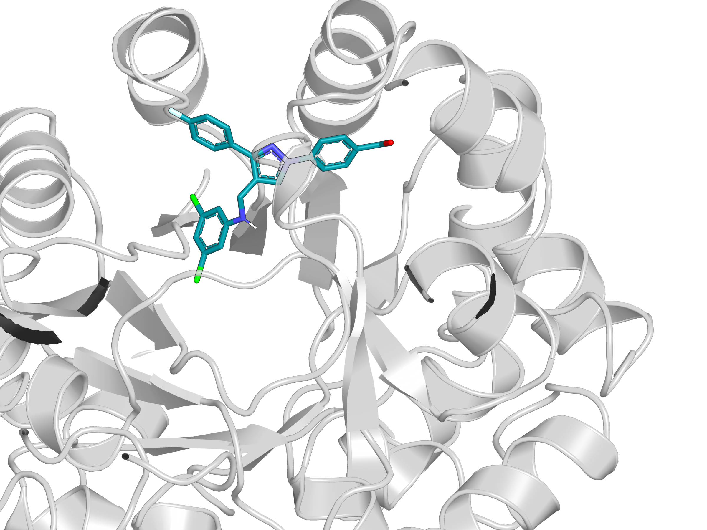
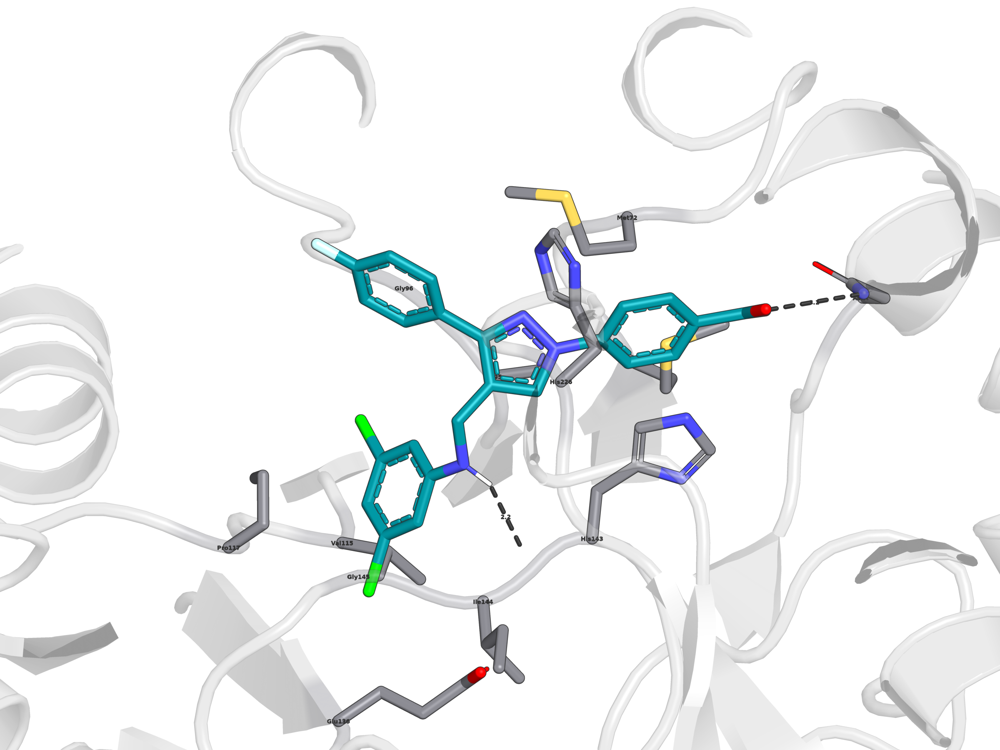
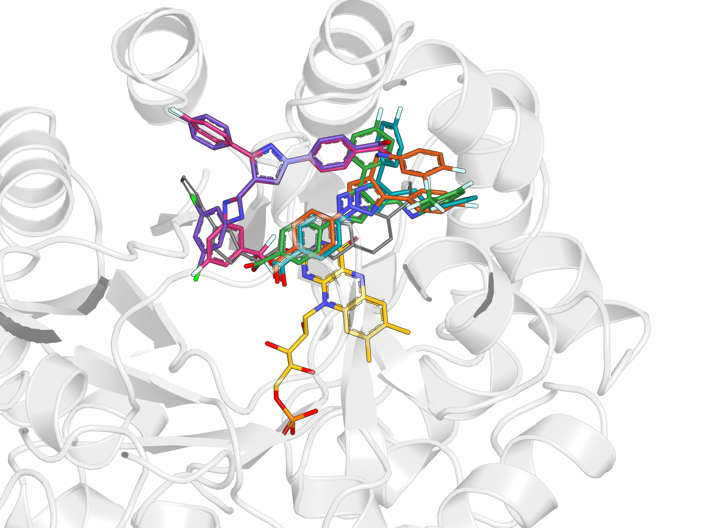
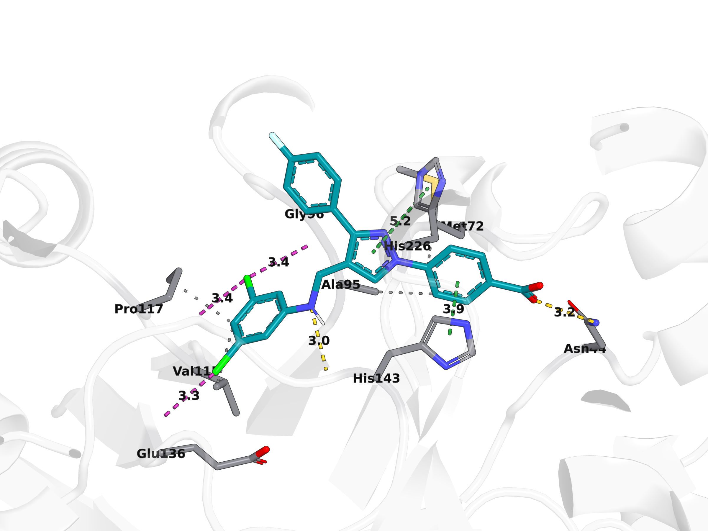
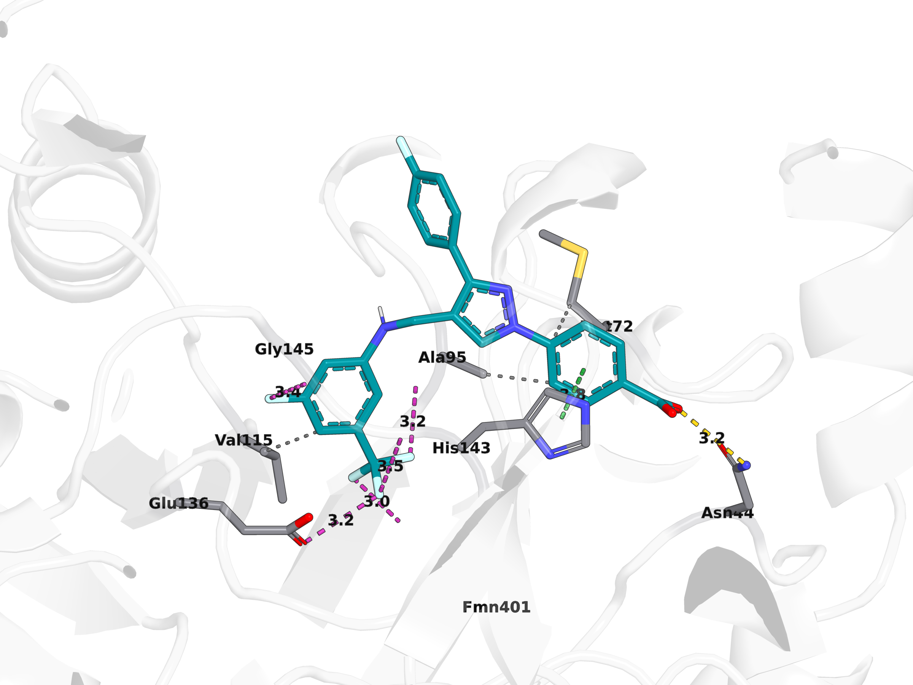
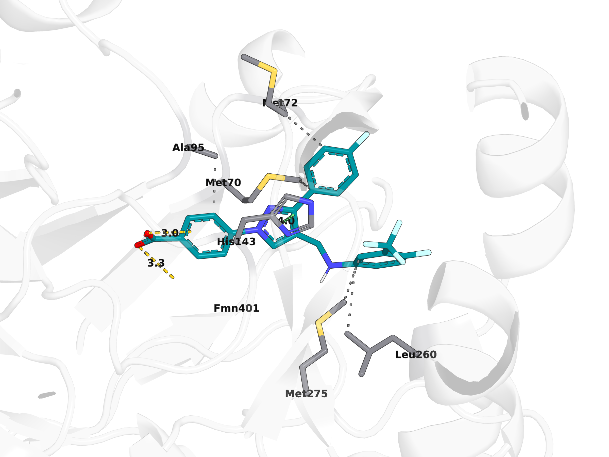
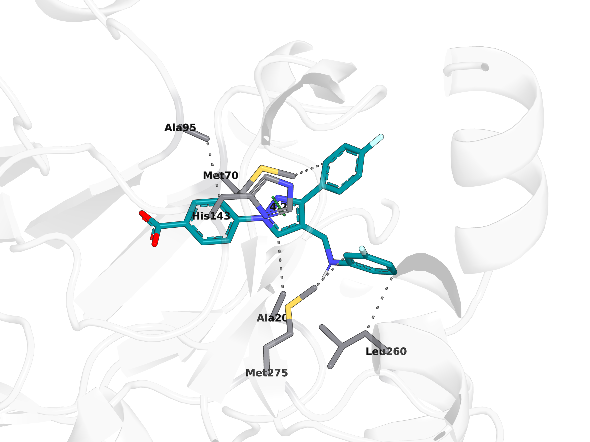
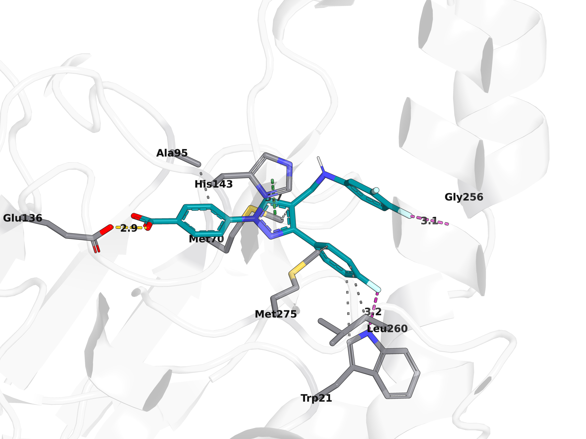

Computational & Medicinal Chemistry
Interaction analysis of five pyrazole benzoic acid derivatives bound to Clostridioides difficile FabK, an enzyme of bacterial fatty acid biosynthesis. This page covers the structure-analysis stage: how the docked poses were rendered and how every protein–ligand contact was detected, measured and tabulated.
The docking protocol was validated by redocking the co-crystallised inhibitor XCJ, reproducing the experimental pose to 0.82 Å RMSD. MM/GBSA rescoring reproduced the measured antibacterial potency order of all five compounds exactly, across a 32-fold range of MIC; the docking score alone did not.
The pocket is strongly anionic, carrying Glu136 at −1 and the FMN phosphate at −2, while these compounds are benzoate anions. Every compound is electrostatically repelled, and how strongly depends on where the aniline substitution places the carboxylate. That is what separates them, and it is why a scoring function without an explicit electrostatic term could not.
| Compound | Aniline | MIC (µg/mL) | MM/GBSA (kcal/mol) |
|---|---|---|---|
| 20sa23 | 3,5-dichloro | 1 | −32.02 |
| 25sa23 | 3-CF₃, 5-F | 2 | −28.53 |
| 22sa23 | 3-CF₃, 4-F | 4 | −23.35 |
| 5sa23 | 3-fluoro | 16 | −17.89 |
| 17sa23 | 3,4-difluoro | 32 | −10.78 |
MIC values are from the source paper, measured against Staphylococcus aureus ATCC 29213. The structure is C. difficile FabK, so the comparison is between a binding model for one enzyme and whole-cell activity in another organism. MM/GBSA values are computational scores, not experimentally measured binding free energies. Five compounds is a small set, and the rank agreement carries limited statistical weight on its own.
pymol -cq:
(docking) siam.chowdhur@CSM-DL-CRF0M2:~/Documents/Computational_work/WORK LAB/s_series$Nothing is clicked, positioned or exported by hand, so the whole analysis is reproducible by re-running the scripts.
PyMOL (open-source or Incentive) with Python 3. Everything else ships with
PyMOL — chempy.cpv supplies the vector maths used for ring
geometry.
conda activate docking
cd ~/Documents/Computational_work/"WORK LAB"/s_series
pymol -cq --versions_series/
├── 7L00_AB_protein_FMN.pdb # receptor: protein + FMN cofactor
├── XCJ_A402_crystal.sdf # crystal ligand (sets the common camera view)
├── docking_focused_<cmpd>/
│ └── <cmpd>_best.mol2 # top-scoring pose, read by both scripts
└── docking_<cmpd>/ # same layout, non-focused run*_best.mol2 is used rather than .pdbqt because it
preserves bond orders, which the aromatic-ring detection and the valence-based
hydrogen counting both depend on.
All paths in the scripts are relative to the current working directory, so
the analysis can be relocated — cd into the folder holding the
receptor and the docking_* folders before running. Both scripts
exit with a plain message if the receptor is not found there.
Each compound is first rendered on its own as a 3D stick model carrying
ACS-style heteroatom labels — NH, OH,
NH₂ rather than bare N and O.
MOL files exported from drawing programs usually carry no explicit
hydrogens, and h_add will not add them when the file's bond orders
already satisfy each atom. The label text is therefore computed the way a
drawing program does it — from valence minus the summed bond orders, with
aromatic bonds counted as order 1.5 so ring nitrogens are typed correctly:
valence = {"N": 3, "O": 2, "S": 2, "P": 3}
nH = valence[elem] + formal_charge - sum_of_bond_orders
txt = elem if nH == 0 else elem + "H" + subscript(nH)label_size is negative, which sizes text in Ångströms rather
than screen pixels, so labels stay sharp at any render resolution.float_labels, 1 draws labels on top of the sticks instead of
letting the geometry clip them.pymol -cq make_docking_figures.py # focused docking (default)
pymol -cq make_docking_figures.py -- regular # non-focused runFor each compound the script loads the receptor, overlays the best pose, selects the FMN cofactor and every residue within 4.0 Å of the ligand, and renders two views. The camera is set once from the XCJ crystal ligand site and reused for every compound, so the five images align when assembled into a panel.
figures_focused/| File | Contents |
|---|---|
<cmpd>_pocket.png | Ligand (teal) and FMN (gold) in the FabK cartoon |
<cmpd>_closeup.png | Pocket residues labelled, H-bonds dashed with distances |
<cmpd>_interactions.txt | H-bond partners and distances |
<cmpd>_session.pse | Session for manual re-orientation |
overlay_all.png | All five compounds plus crystal ligand XCJ in one pocket |
overlay_legend.txt | Colour key for the overlay |



pymol -cq make_interaction_figures.py # focused docking (default)
pymol -cq make_interaction_figures.py -- regular # non-focused runHydrogens are added to the receptor at runtime so PyMOL can type donors and acceptors; the input files themselves are never modified. Ligand aromatic rings are found by cycle detection on the bond graph and kept only if planar — every ring atom within 0.25 Å of the mean plane. Only residues that actually make contact are drawn and labelled, which is what keeps the figures readable.
| Interaction | Rendered as | Cutoff |
|---|---|---|
| Hydrogen bond | yellow dashes + distance | ≤ 3.5 Å, donor/acceptor |
| Salt bridge | red dashes | ≤ 4.0 Å |
| Halogen bond | magenta dashes | ≤ 3.5 Å, C–X···O/N |
| π–π stacking | green dashes (centroid–centroid) | ≤ 5.5 Å; parallel < 30° or T-shaped > 60° |
| π–cation | orange dashes | ≤ 6.0 Å to Arg/Lys N |
| Hydrophobic | grey dotted | ≤ 4.0 Å C···C, ≥ 2 contacts per residue |
interactions_focused/| File | Contents |
|---|---|
<cmpd>_interactions.png | Contacting residues only, labelled, colour-coded by type |
<cmpd>_interactions.tsv | Every contact: type, residue, chain, atom names, distance |
summary_all_compounds.tsv | All five compounds in one table |
legend.txt | Colour key for the figure caption |
<cmpd>_session.pse | Session for manual re-orientation |





Ordered by potency, most potent first. Only residues that make contact are drawn and labelled; dash colour encodes the interaction type per the table above.
The default label size was too small to read at 2400 × 1800. The value is adjusted in place and the figures re-rendered:
sed -i 's/s("label_size", -[0-9.]*)/s("label_size", -2.0)/' make_interaction_figures.py
pymol -cq make_interaction_figures.pyThe -[0-9.]* pattern matches whatever value is currently set, so
the command works no matter how many times the size has already been changed —
matching a literal previous value fails silently once it has moved on. Values
are in Ångströms; a larger magnitude means larger text. -2.0 was
used for the final figures.
To adjust one figure by hand rather than re-running everything:
pymol interactions_focused/17sa23_interactions.pseset label_size, -2.0
png 17sa23_final.png, width=2400, height=1800, dpi=300, ray=1HB_CUT = 3.5 # hydrogen-bond cutoff (Å)
PHOB_CUT = 4.0 # hydrophobic C···C cutoff (Å)
WIDTH, HEIGHT, DPI = 2400, 1800, 300cat interactions_focused/summary_all_compounds.tsv
xdg-open interactions_focused/17sa23_interactions.png| Compound | H-bond | Halogen | π–π | Hydrophobic |
|---|---|---|---|---|
| 20sa23 | 2 | 3 | 2 | 4 |
| 25sa23 | 1 | 5 | 1 | 3 |
| 22sa23 | 2 | 0 | 1 | 5 |
| 5sa23 | 0 | 0 | 1 | 5 |
| 17sa23 | 1 | 2 | 1 | 5 |
Rows are ordered by potency, most potent first, to match the MIC table above. 20sa23, the most potent compound, forms the most extensive polar network. Contact counts alone do not track potency across the series — the MM/GBSA electrostatic term is what separates these compounds, not the number of contacts.
Source code and data files, read live from the repository. Click a file name
to expand it — the contents are pulled from main at that moment, so
what you see is always the current version, never a copy pasted into this
page.
make_docking_figures.pyLoading…make_interaction_figures.pyLoading…interactions_focused/summary_all_compounds.tsvLoading…20sa23_interactions.tsvLoading…25sa23_interactions.tsvLoading…22sa23_interactions.tsvLoading…5sa23_interactions.tsvLoading…17sa23_interactions.tsvLoading…legend.txtLoading…figures_focused/20sa23_interactions.txtLoading…25sa23_interactions.txtLoading…22sa23_interactions.txtLoading…5sa23_interactions.txtLoading…17sa23_interactions.txtLoading…overlay_legend.txtLoading…| Problem | Cause | Fix |
|---|---|---|
Labels read N instead of NH |
MOL file had no explicit hydrogens, and h_add would not add them |
Derive the H count from valence minus summed bond orders |
| Labels looked like cut-off stickers | White label backgrounds clipped by the sticks | float_labels, 1 and a white outline instead of a filled background |
| Label text invisible against bonds | Label colour matched the bond colour beneath it | Black text with a white halo |
AttributeError: 'float' object has no attribute 'update' |
A variable named b inside cmd.iterate collides with PyMOL's reserved B-factor variable |
Rename the namespace variables to p1 / p2 |
sed label-size edit silently did nothing |
The pattern matched the previous literal value, which had already changed | Match any number with -[0-9.]* |
| Author | Siam Chowdhury (Beck Scholar) · www.siamchowdhury.com |
| Field | Computational and Medicinal Chemistry |
| Mentor | Mohammad Alam, PhD — Professor of Chemistry |
| Research group | Dr. Alam's Research Team |
| Institution | Beck College of Sciences and Mathematics, Arkansas State University, AR, USA |
| Full report | siamchowdhury-1.github.io/fabk-docking-7L00 |
| Reference paper | 10.1021/acs.jmedchem.3c00969 |